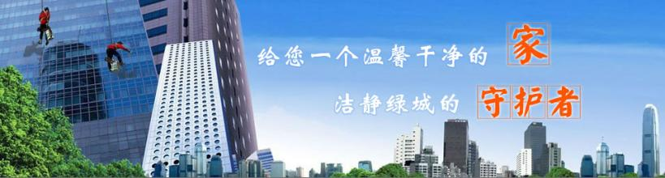
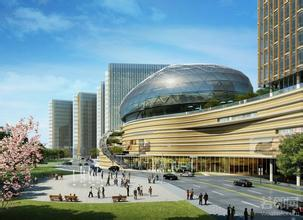
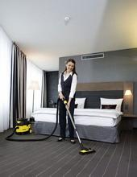

关于京通天元

北京京通天元物业管理有限责任公司成立于2000年元月。注册资本300万元，现为物业管理二级资质企业，中国物业管理协会会员。 公司总部分设办公室、管理部、运营部、市场部、工程部、财务部和人力资源部。公司下设华堂商厦、万柳怡水园、千鹤家园、晨光家园、翠成馨园、朝内小区、营口福地山水等共计14个物业管理处。 截至到2011年底，公司物业管理面积已达299.47万平方米。10余年的物业管理实践，企业积累了丰富的中高档住宅、大型经适房社区、商厦、医院、写字楼等多种类型的物业管理和服务经验；培养并造就了精管理、善经营的管理团队及涵盖给排水、供配电、空调暖通、电梯、消防、楼宇自控等在内的专业技术团队。其中，管理团队中中层及以上管理人员均已取得国家物业管理师、物业项目负责人、专业技术职称等职业资格。专业技术团队中，一般物业管理人员和专业技术人员全部持有物业管理或相关专业人员从业资格证书。 京通天元公司秉承“以人为本、真诚守信、团结创新、追求卓越”的企业理念， 坚持规范化、专业化、科学化和个性化服务，赢得了广大业主、开发商和属地政府的认可和赞许。公司先后获得首都共建文明居民区先进单位、守信企业等荣誉。培育了北京市物业管理示范大厦、北京市物业管理示范住宅小区（四星）、首都绿化美化式花园单位等精品项目。 面对广大业主对物业服务企业所提供产品质量的要求日益提高的态势，面对行业间日益激烈的市场竞争，京通天元全体员工坚信“细节成就完美，服务打造品牌，诚信引领发展”的信条。公司将继续学习和借鉴国内外物业行业先进的管理理念和经验，与时俱进，不断提升服务和管理水平，为实现所辖物业保值增值，为创建宜居社区、构建和谐社会而努力。
222

北京京通天元物业管理有限责任公司成立于2000年元月。注册资本300万元，现为物业管理二级资质企业，中国物业管理协会会员。 公司总部分设办公室、管理部、运营部、市场部、工程部、财务部和人力资源部。公司下设华堂商厦、万柳怡水园、千鹤家园、晨光家园、翠成馨园、朝内小区、营口福地山水等共计14个物业管理处。 截至到2011年底，公司物业管理面积已达299.47万平方米。10余年的物业管理实践，企业积累了丰富的中高档住宅、大型经适房社区、商厦、医院、写字楼等多种类型的物业管理和服务经验；培养并造就了精管理、善经营的管理团队及涵盖给排水、供配电、空调暖通、电梯、消防、楼宇自控等在内的专业技术团队。其中，管理团队中中层及以上管理人员均已取得国家物业管理师、物业项目负责人、专业技术职称等职业资格。专业技术团队中，一般物业管理人员和专业技术人员全部持有物业管理或相关专业人员从业资格证书。 京通天元公司秉承“以人为本、真诚守信、团结创新、追求卓越”的企业理念， 坚持规范化、专业化、科学化和个性化服务，赢得了广大业主、开发商和属地政府的认可和赞许。公司先后获得首都共建文明居民区先进单位、守信企业等荣誉。培育了北京市物业管理示范大厦、北京市物业管理示范住宅小区（四星）、首都绿化美化式花园单位等精品项目。 面对广大业主对物业服务企业所提供产品质量的要求日益提高的态势，面对行业间日益激烈的市场竞争，京通天元全体员工坚信“细节成就完美，服务打造品牌，诚信引领发展”的信条。公司将继续学习和借鉴国内外物业行业先进的管理理念和经验，与时俱进，不断提升服务和管理水平，为实现所辖物业保值增值，为创建宜居社区、构建和谐社会而努力。
33

北京京通天元物业管理有限责任公司成立于2000年元月。注册资本300万元，现为物业管理二级资质企业，中国物业管理协会会员。 公司总部分设办公室、管理部、运营部、市场部、工程部、财务部和人力资源部。公司下设华堂商厦、万柳怡水园、千鹤家园、晨光家园、翠成馨园、朝内小区、营口福地山水等共计14个物业管理处。 截至到2011年底，公司物业管理面积已达299.47万平方米。10余年的物业管理实践，企业积累了丰富的中高档住宅、大型经适房社区、商厦、医院、写字楼等多种类型的物业管理和服务经验；培养并造就了精管理、善经营的管理团队及涵盖给排水、供配电、空调暖通、电梯、消防、楼宇自控等在内的专业技术团队。其中，管理团队中中层及以上管理人员均已取得国家物业管理师、物业项目负责人、专业技术职称等职业资格。专业技术团队中，一般物业管理人员和专业技术人员全部持有物业管理或相关专业人员从业资格证书。 京通天元公司秉承“以人为本、真诚守信、团结创新、追求卓越”的企业理念， 坚持规范化、专业化、科学化和个性化服务，赢得了广大业主、开发商和属地政府的认可和赞许。公司先后获得首都共建文明居民区先进单位、守信企业等荣誉。培育了北京市物业管理示范大厦、北京市物业管理示范住宅小区（四星）、首都绿化美化式花园单位等精品项目。 面对广大业主对物业服务企业所提供产品质量的要求日益提高的态势，面对行业间日益激烈的市场竞争，京通天元全体员工坚信“细节成就完美，服务打造品牌，诚信引领发展”的信条。公司将继续学习和借鉴国内外物业行业先进的管理理念和经验，与时俱进，不断提升服务和管理水平，为实现所辖物业保值增值，为创建宜居社区、构建和谐社会而努力。